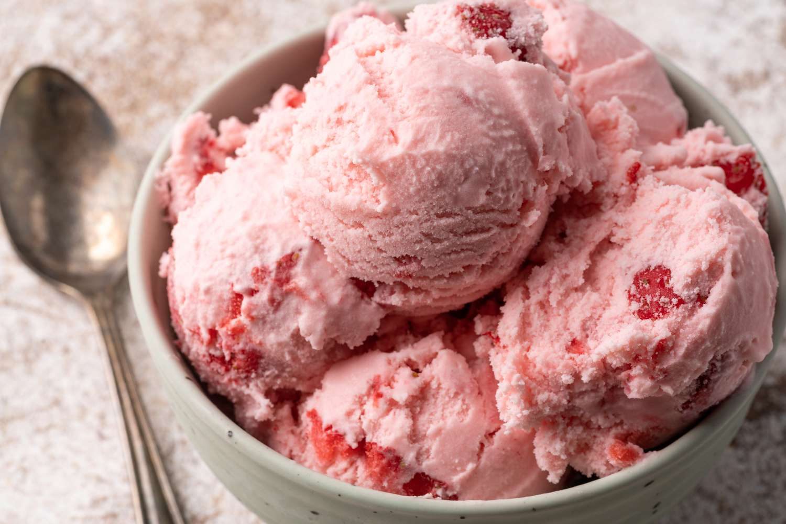
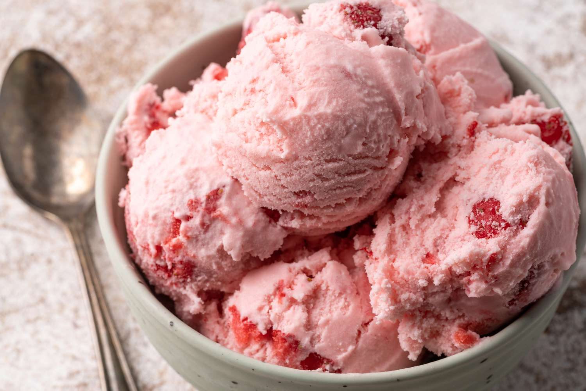

My name is Gabriela Guayara Quilli. I am majoring in Computer Science at Borough of Manhattan Community College. I will gradute this Fall 2023 and get my Associate's degree in Science.
Some interesting facts I would like to share about me are the followings:
I was born and raise in Ecuador. I am ecuadorian and I moved to New York City three years ago.
I am actively involved in leadership programs like Moody's Corporation Mentorship and the National Society of Leadership and Success(NSLS). I actually work as a Group Leader for NSLS
I had the opportunity to intern in summer in two different companies: Blackfacts.com and Nearble. I learned new tech skills on both companies and I also improve my communication and time-management skills
My favorite food is "El Ceviche" and my favorite snack is strawberry ice cream

 
